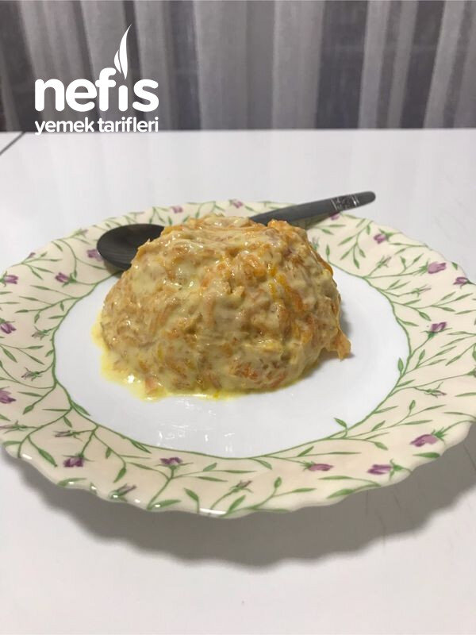
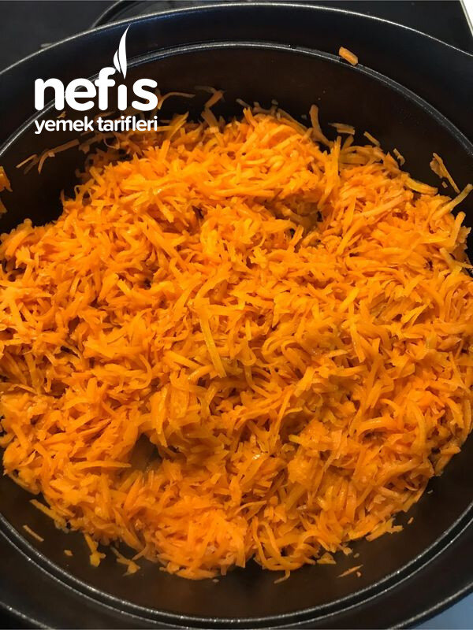
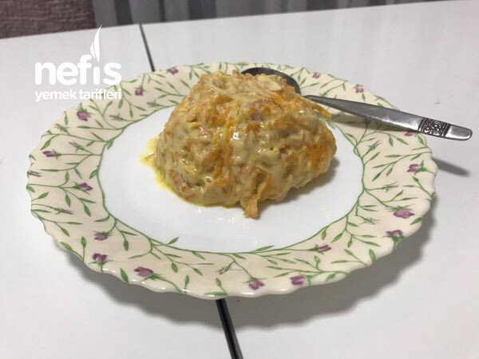

Nefis Yoğurtlu Havuç Mezesi
2021-12-01
← Tüm tarifler

🍽️ 6-8 kişilik
⏱️ Hazırlık: 10 dk
🔥 Pişirme: 25 dk
🏷️ Salata & Meze & Kanepe
🏷️ Meze Tarifleri
Malzemeler
6-7 iri havuç
1 kase koyu kıvamlı yoğurt
1-2 diş sarımsak
Tuz
1 fincan kadar zeytinyağı
İstenirse ceviz
Hazırlanışı
Havuçları yıkayıp rendeliyoruz.
Tencereye yağı koyarak ocağı açıyoruz.
Havuçları ilave ediyoruz.
Kısık ateşte ara ara karıştırarak kavuruyoruz.
İyice kavrulan havuçları ocağı kapatarak soğumaya bırakıyoruz.
Sarımsağı tuzla ezip yoğurtla karıştırıyoruz.
Havuca ilave ederek iyice karıştırıyoruz.
Nefis, sağlıklı mezemiz servise hazır.
İstenirse ceviz de ilave ediyoruz.
Fotoğraflar

